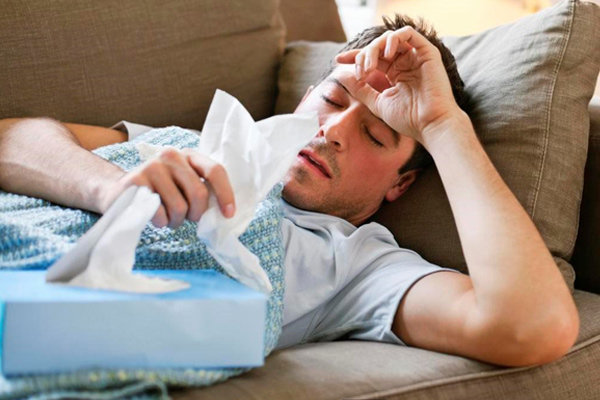

گزارش ثریا حسین عرفانی، در گفتگو با شبکه خبر، با بیان اینکه ما با یک بیماری مسری نوپدید مواجه هستیم
گفت: کووید ۱۹ یک بیماری واگیر دار است که تاکنون سیستم ایمنی هیچ کس با این بیماری مواجه نبوده است
رئیس اداره مراقبت بیماریهای واگیر وزارت بهداشت، افزود: ما به دنبال این هستیم که چرخه ابتلای این بیماری از شخص بیمار به دیگران را قطع و یا به صفر کاهش دهیم
وی ادامه داد: برای این کار باید به چند نکته از جمله رعایت نکات بهداشتی توجه شود
عرفانی گفت: هر فرد بیمار میتواند در هر ۵ روز دست کم ۲ نفر را مبتلا میکند
رئیس اداره مراقبت بیماریهای واگیر وزارت بهداشت، با بیان اینکه عطسه و سرفه خطرناکترین راه انتقال ویروس کرونا هستند، افزود:
ایجاد فاصله مناسب (حدود ۲ متر) و استفاده از دستکش و ماسک در مراکز شلوغ و پرجمعیت مانند مترو ضروری است
وی با بیان اینکه رعایت فاصله گذاری اجتماعی تا ۲۰ فروردین ادامه خواهد داشت
گفت: ادارات از دو روز دیگر بازگشایی میشود و با یک سوم کارکنان به فعالیت خود ادامه میدهد
عرفانی افزود: کسانی که دچار سرماخوردگی و یا کووید ۱۹ شده اند، بیماری خود را جدی گرفته و با مراکز ۴۰۳۰ و سامانه سلامت در ارتباط باشند و از مشاورههای پزشکی استفاده کنند
رئیس اداره مراقبت بیماریهای واگیر وزارت بهداشت درباره خوردن و آشامیدن در محل کار توصیه کرد: مراکز اداری کشور که از دو روز دیگر بازگشایی میشود بهتر است فاصله گذاری اجتماعی را رعایت کنند و از ظروف یکبار مصرف استفاده کنند
وی گفت: چای داغ ویروس ندارد، اما از سلامت لیوانتان مطمئن شوید